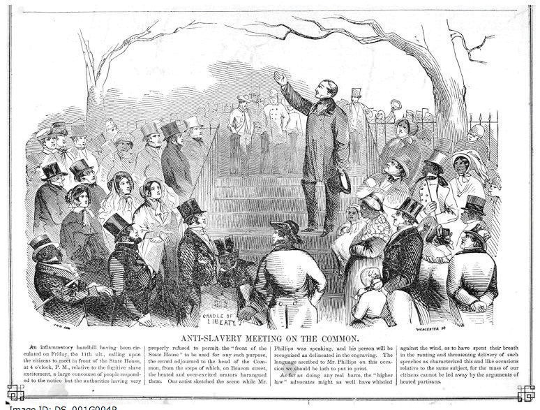
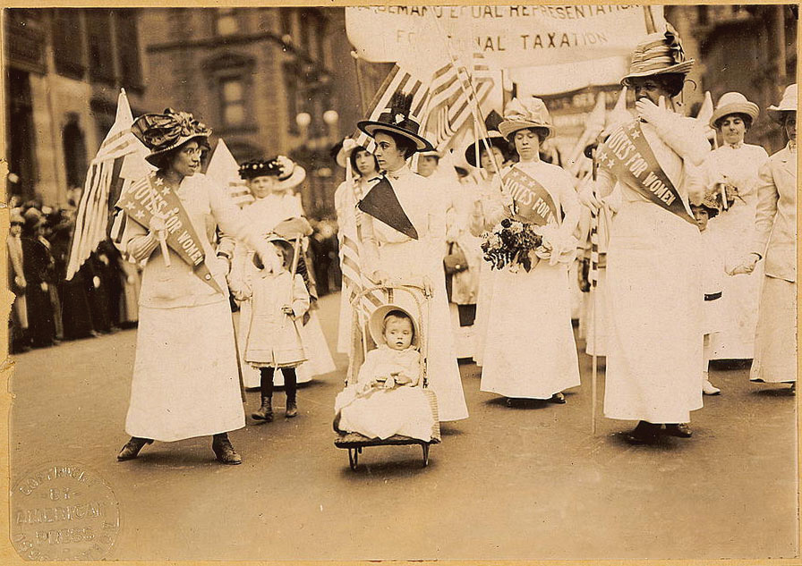

After reading this section, you should be able to answer the following questions:
Thus far our discussion has focused primarily on how and why individuals decide to participate in politics by engaging in activities such as voting or running for office. There are times when groups of people who are concerned about a particular issue or idea join forces to demand government action. A social movement is formed when large numbers of people organize and mobilize to actively pursue common political objectives.Jo Freeman and Victoria Johnson, eds., Waves of Protest (Lanham, MD: Rowman & Littlefield, 1999).
A social movement has a formal and enduring organizational structure as well as recognized leaders. Movements begin with people who share concerns about long-standing societal problems and believe that their rights and interests are not being adequately represented. They can evolve from grassroots groups into national organizations and even become interest groups that lobby government officials. Social movements can last for months, years, or even decades. The farmworkers’ movement was founded in the 1960s by César E. Chávez and still exists today. Its national organization, the United Farm Workers, seeks congressional legislation to guarantee fair wages and treatment of undocumented workers.United Farm Workers of America, “Action Alert! Urge Congress to Support UFW-Sponsored Bills Allowing an Undocumented Farm Worker to Earn Legalization,” 2001, http://www.ufw.org/gallowact.htm.
Movement participants assume that collective actionCooperative activities by groups in pursuit of a common goal., cooperative activities by groups in pursuit of a common goal, will be more effective in gaining the attention of media and government officials to instigate change than individuals acting on their own. Establishing a communications network to energize participants and mobilize them for action is a key component of a social movement. The digital media have become important organizing tools for social movements. They can use websites, Twitter feed, social media, text messages, and other platforms to publicize their cause, recruit members, fundraise, and organize events.
The United States has a long tradition of social movements that have sparked major changes in political processes and government policies. The abolitionist movementA social movement in the mid-1800s that sought to end slavery. of the mid-1800s sought to end slavery, an issue that contributed to the outbreak of the Civil War. The temperance movementA movement that prompted Congress to pass the Eighteenth Amendment in 1919, instituting Prohibition, which forbade the sale or transportation of alcohol. Prohibition was repealed in 1935., led by the Anti-Saloon League and the Women’s Christian Temperance Union, prompted Congress to pass the Eighteenth Amendment in 1919 prohibiting the sale or transportation of alcohol. Prohibition was repealed in 1935.
Figure 8.12
People, including many women, were involved in the abolitionist movement against slavery in the mid-1800s.
Guaranteeing the right to vote to all citizens has been the focus of some of the most important social movements. The Constitution at the time of the founding guaranteed suffrage only to white, male landowners. States placed restrictions on voting based on race, age, sex, religion, and even personal character. All states had dropped the requirement for land ownership by 1844, but constitutional restrictions based on race remained until 1870 and sex until 1920.
The Fifteenth Amendment to the Constitution formally ended race-based limitations on voting in 1870. However, minority citizens were not truly enfranchised until the passage of the Civil Rights Act of 1964Legislation passed by the US Congress with the goal of guaranteeing African Americans equal rights under the law. and the Voting Rights Act of 1965. This legislation was the result of pressure on the government by the civil rights movement.
The civil rights movement emerged in the 1950s in reaction to discrimination against African Americans in Southern states. Segregationist policies placed restrictions on black citizens’ right to vote and violated their basic civil rights in other ways. African Americans were forced to use facilities separate from whites, such as restrooms and water fountains, and to sit at the back of public buses. Black students attended schools that were usually inferior to schools for whites.
United under the Southern Christian Leadership Conference, black churches formed one foundation of the civil rights movement. Dr. Martin Luther King Jr., one of the movement’s leaders, emphasized that nonviolent direct action would be used to expose racial injustices. Civil rights activists boycotted businesses that employed discriminatory practices. They engaged in acts of civil disobedience that disrupted established patterns of daily life. Blacks ate at white lunch counters, were arrested, and jailed. Southern blacks mounted large-scale voter registration drives. In the summer of 1963 alone, over fourteen hundred demonstrations and marches were staged to protest disenfranchisement and other forms of discrimination.
These tactics were designed to attract media attention that would help to galvanize the movement and force political leaders to take notice, and they worked. Politicians perceived that black voters were becoming powerful and listened to their demands. President John F. Kennedy agreed to sponsor legislation that would ensure black civil and voting rights, which Congress passed and President Lyndon Johnson signed into law after Kennedy’s assassination.
“I Have a Dream”
One of the most enduring, indeed revered, images of the civil rights movement is of Dr. Martin Luther King Jr. addressing a crowd of more than 250,000 people on the Washington Mall from the steps of the Lincoln Memorial. King was joined by thousands of protesters from across the nation participating in the March on Washington for Jobs and Freedom in August 1963.
King delivered the stirring keynote speech extemporaneously. The backdrop of the Lincoln Memorial dramatized the fact that a century after the Emancipation Proclamation had been signed, freeing the slaves, blacks were still crippled by segregation and discrimination. King uttered the famous words, “I have a dream that one day this nation will rise up and live out the true meaning of its creed: ‘We hold these truths to be self-evident, that all men are created equal.’”
The speech was covered on television in its entirety and received widespread attention in newspapers and magazines. The image of King, arm extended and head held high, addressing the crowd marks a memorable moment in our nation’s history and has come to symbolize the civil rights movement and its leaders. It has been replicated in history books and popular films, like Forrest Gump.
Dr. Martin Luther King Jr. giving the “I Have a Dream” speech. The image of Dr. Martin Luther King Jr. addressing the crowd on the National Mall endures as a symbol of the civil rights movement.
Source: Used with permission from AP Photo.
Martin Luther King Jr. “I Have a Dream”
(click to see video)Video of the “I Have a Dream Speech” delivered by Dr. Martin Luther King Jr. in August 1963.
Throughout much of American history, a woman was considered to be an extension of her husband and, as such, did not need her own vote. Women were not granted the constitutional right to vote until 1920, but they were politically involved. Women formed charitable institutions to fight poverty and were active in reform movements, such as protecting children working in factories and textile mills. They participated in abolitionist groups that formed in the 1830s to achieve suffrage for slaves. Lucretia Mott and Elizabeth Cady Stanton were denied voting rights as delegates to a worldwide antislavery convention in London. This event compelled them to organize the women’s movementA social movement that began with the goal of seeking women’s suffrage and extended to other aspects of women’s equality. in the United States with the primary goal of gaining the fundamental right to vote.
Women acquired organizing skills that were central to their movement from their involvement with other causes. They lobbied Congress and state legislatures, spoke passionately in public forums, held rallies, circulated petitions, and even went to jail for their beliefs. The Nineteenth Amendment, ratified in 1920, granted woman suffrage.
Figure 8.13 Suffragettes Fighting for the Right to Vote
Women who had been active in the movement to abolish slavery had thought that demands for women’s equality would be next on the agenda. As it turned out, they had to pressure for another fifty years before the Nineteenth Amendment guaranteed the right of women to vote.
Source: Photo courtesy of the US Library of Congress, http://commons.wikimedia.org/wiki/File:Suffrage_parade-New_York_City-May_6_1912.jpg.
Even as women won the legal right to vote, barriers to their participation remained. States made registration difficult. Some women were discouraged from voting by their husbands and friends.M. Margaret Conway, Political Participation in the United States (Washington, DC: CQ Press, 1991), 98–107. From the 1960s to the 1980s, the women’s movement was revitalized around the basic goals of achieving equal rights for women in politics, business, organized religion, and sports. Women fought for equal work for equal pay, for women to be ordained as clergy, and for girls to have the same opportunities to compete in school sports as boys. They were successful in achieving many of their goals. Congress passed the Women’s Educational Equity ActLegislation passed by the US Congress to guarantee women the same educational opportunities as men and that includes Title IX, which requires schools to remove barriers to females’ full participation in sports. in 1974, which included Title IX, requiring schools to remove barriers to females’ full participation in sports.
Today, there is no longer a single mass women’s movement. Instead, there are many organizations working on a wide range of issues related to women, such as health care, social justice, and domestic violence.Barbara Epstein, “What Happened to the Women’s Movement,” Monthly Review, April 2000, 1–13. They make use of digital communication to reach out to the public and to support one another. The National Organization for Women (NOW), which takes action on issues of women’s equality, provides information and opportunities for participation online. Through its website, “Take Back The Night” promotes action against domestic violence by providing an online guide to organizing events, making T-shirts and posters available, and offering access to legal assistance.“Take Back The Night” website http://www.takebackthenight.org.
Following in the footsteps of the civil rights movement and the women’s movement, other movements have formed in reaction to policies that disadvantage particular segments of society. The gay rights movement has succeeded in having policies enacted to fight discrimination in the workplace, increase access to medical benefits, and stop bullying in schools. Disabled Americans formed a movement that resulted in the passage of the Americans with Disabilities ActLegislation passed by the US Congress guaranteeing that no individual will be excluded from the benefits of any program or activity that received public funding because of a handicap. of 1990 guaranteeing that no individual will be excluded from the benefits of any program or activity receiving public funding because of a handicap.
Some social movements have become a force in the political mainstream. The Christian RightA loose coalition of evangelical Protestants who share common ideological beliefs, such as support for traditional marriage and a pro-life position on abortion. emerged in the 1980s as groups of evangelical Protestants found common ground in shared ideological beliefs, including support for marriage and traditional two-parent families, a pro-life position on abortion, local control of education and home schooling, and the protection of young people from pornography. It has become aligned with the conservative wing of the Republican Party.Christian Coalition of America, “Our Mission,” http://www.cc.org.
Social movements can employ tactics to reverse the law or to challenge outcomes using extralegal, illegal, and even violent means. Antiabortion activists who seek legislation making abortions illegal have bombed clinics and attacked and even killed doctors who perform abortions. Self-described “ecoterrorists” have set fire to housing developments that they see as contributing to suburban sprawl.
Some movements invoke the Constitution as a justification for violent action against the government. The militia movement believes it must preserve the Constitution’s Second Amendment right to keep and bear arms. Members conduct regular drills in military dress during which they fire high-powered weapons. The movement uses an elaborate system of websites and independent radio stations to present their position and communicate with one another.
Social movements rely on media attention to gain public support, recruit members, and present their agendas to political leaders. The media can shape the public’s views about particular movements and the causes they represent. Movement leaders attempt to gain control over their message through interviews and staged events.
The press can influence a movement’s success or failure. The 1960s student movement provides an illustration. At first the student movement was virtually ignored by the media. As the Vietnam War escalated, students expressed their opposition through demonstrations and sit-ins on college campuses. Media coverage was abundant and favorable. News stories about student activists along with graphic televised images of the war helped attract new members to the antiwar effort. Press coverage became more negative as government officials who opposed the antiwar movement emerged and were featured in media reports. Negative coverage galvanized the movement, as supporters rallied to defend the cause. It also radicalized the movement, as members pursued more militant tactics to ensure coverage. The bombing of a building at the University of Wisconsin, which killed a graduate student, caused people to lose sympathy with the activists. Journalists grew tired of the story and portrayed the movement as factionalized into different groups with rival leaders. The student movement eventually fell apart.Todd Gitlin, The Whole World Is Watching (Berkeley: University of California Press, 1980).
The Tea Party is a loosely organized grassroots political movement formed in February 2009, whose members advocate reduced government spending, lower taxes, and a strict interpretation of the US Constitution. The organization borrows its name from the Boston Tea Party, an incident in 1773 in which colonists protested against the British government tax on tea by throwing tea imported by ships into the Boston Harbor. The Tea Party lacks a clear leader or centralized organization and is composed of more than fourteen hundred localized groups. The media have made it possible for the Tea Party to gain national attention and develop a sizable following that contributed to Tea Party candidates’ winning elections in 2010. Major news outlets publicized Tea Party protests against taxes and health care reform, especially as their lively rallies and colorful front persons, including former Alaska governor Sarah Palin, made for good copy. The Tea Party Patriots website provides an online community organization for the movement.
America has a long tradition of social movements wherein people work collectively for a cause. Movements have sought equal rights for women, members of racial and ethnic groups, and lesbian and gay citizens. They have worked to create better opportunities for people with disabilities and senior citizens. Social movements rely on collective action that brings individuals together to work toward a joint goal. The media are important for attracting attention to these efforts, which can increase participation in the movement and force political leaders to take notice.